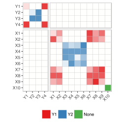
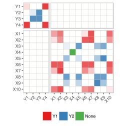
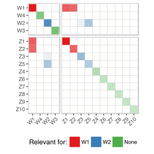
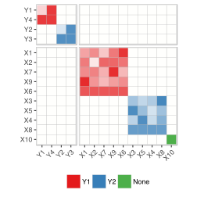
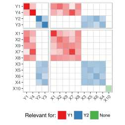
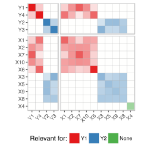
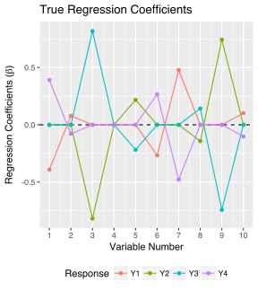
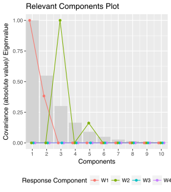
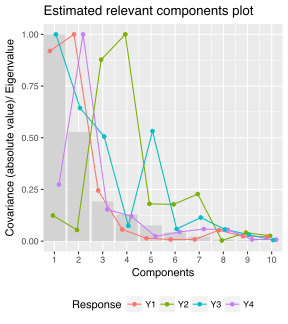

Even the simplest tools can empower people to do great things
15 Mar, 2018
Even the simplest tools can empower people to do great things
Simulated data is used everywhere in research to compare methods, models, algorithms, techniques etc. Simrel can be a common tool for such purpose
Simulate linear model data with wide range of properties using small set of tuning paramters, Example:
Controlling degree of multicollinearity in the simulated data
Specifying the relevant principle components for prediction

Reduction of regression Model: A Predictor sub-space ( blue) is relevant for informative response sub-space ( green). The idea discussed in 1 was implemented for single response in 2.

\[\begin{bmatrix}y \\ x \end{bmatrix} \sim \text{N}\left( \begin{bmatrix} \mu_y \\ \mu_x \end{bmatrix}, \begin{bmatrix} \Sigma_{yy} & \Sigma_{yx}\\ \Sigma_{xy} & \Sigma_{xx} \end{bmatrix} \right)\]
Define a linear tranformation as \(z = Rx\) and \(w = Qy\), for any orthogonormal matrix \(R\) and \(Q\), we can imagine them as a rotation (eigenvector) matrix, so,
\[\begin{bmatrix}y \\ x \end{bmatrix} \sim \text{N}\left( \begin{bmatrix} Q^t\mu_w \\ R^t\mu_z \end{bmatrix}, \begin{bmatrix} Q^t\Sigma_{ww}Q & Q^t\Sigma_{wz}R\\ R^t\Sigma_{zw}Q & R^t\Sigma_{zz}R \end{bmatrix} \right)\]
There are \(\frac{1}{2}(p + m)(p + m + 1)\) unknowns to identify this model. But, …
Reduction of regression Model: A Predictor sub-space ( blue) is relevant for informative response sub-space ( green). The idea discussed in 1 was implemented for single response in 2.
\[ \begin{aligned} \Sigma_{ww} &= \text{diag}(\kappa_1, \ldots, \kappa_m), \kappa_j = e^{-\eta(y_j - 1), \; \eta > 0} \\ \Sigma_{zz} &= \text{diag}(\lambda_1, \ldots, \lambda_p), \lambda_i = e^{-\gamma(x_i - 1), \; \gamma > 0} \end{aligned} \]
We need to meet the constrains of coefficient of determinatin:
\[ \begin{aligned} \rho_w^2 &= \Sigma_{ww}^{-1/2} \Sigma_{zw}^{t} \Sigma_{zz}^{-1} \Sigma_{zw} \Sigma_{ww}^{-1/2} \\ \left(\rho_w^2\right)_{ij} &= \frac{\sigma_{ij}^t \Lambda ^{-1} \sigma_{ij'}}{\sqrt{\sigma_j^2\sigma_{j'}^2}} \forall j, j' = 1 \ldots m \end{aligned} \]
We assume there are no overlapping relevant components and there exist a subspace in predictor relevant to a subspace in response. This gives us,
\[ \rho_{w_j}^2 = \sum_{i=1}^p{\frac{\sigma^2_{ij}}{\lambda_i\kappa_j}} = \sum_{i\in \mathcal{P}}{\frac{\sigma^2_{ij}}{\lambda_i\kappa_j}} \]
| Parameter | Description |
|---|---|
n
|
Number of observations |
p
|
Number of predictor variables |
q
|
Number of relevant predictor variables |
m
|
Number of response variables |
relpos
|
Position of predictor components relevant for each response components |
ypos
|
Index to combine informative and non-informative response components |
R2
|
Coefficient of determination for each response components |
gamma
|
Decay factor of eigenvalues of predictor |
eta
|
Decay factor of eigenvalues of response |
sobj <- simrel( n = 20, p = 10, m = 4, q = c(5, 4), ypos = list(c(1, 4), c(2, 3)), relpos = list(c(1, 2), c(3, 5)), R2 = c(0.8, 0.8), gamma = 0.6, eta = 0.2, type = "multivariate" )

\[ \begin{aligned} \rho_{w_1}^2 &= \sum_{i\in \mathcal{P}}{\frac{\sigma^2_{i1}}{\lambda_i\kappa_1}}\\ &= \frac{\sigma_{11}^2}{\lambda_1\kappa_1} + \frac{\sigma_{21}^2}{\lambda_2\kappa_1} \end{aligned} \]

\[ \Sigma = \begin{bmatrix} \Sigma_{yy} & \Sigma_{yx}\\ \Sigma_{xy} & \Sigma_{xx} \end{bmatrix} \\ = \begin{bmatrix} Q^t\Sigma_{ww}Q & Q^t\Sigma_{wz}R\\ R^t\Sigma_{zw}Q & R^t\Sigma_{zz}R \end{bmatrix} \]

Define, \[\underset{n\times(m+p)}{G} = U\Sigma^{-1/2}\] \[\text{such that, } \text{cov}(G) = \Sigma\]

\[ \begin{aligned} \rho_{w_1}^2 &= \sum_{i\in \mathcal{P}}{\frac{\sigma^2_{i1}}{\lambda_i\kappa_1}}\\ &= \frac{\sigma_{11}^2}{\lambda_1\kappa_1} + \frac{\sigma_{21}^2}{\lambda_2\kappa_1} \end{aligned} \]

\[ \Sigma = \begin{bmatrix} \Sigma_{yy} & \Sigma_{yx}\\ \Sigma_{xy} & \Sigma_{xx} \end{bmatrix} \\ = \begin{bmatrix} Q^t\Sigma_{ww}Q & Q^t\Sigma_{wz}R\\ R^t\Sigma_{zw}Q & R^t\Sigma_{zz}R \end{bmatrix} \]

Define, \[\underset{n\times(m+p)}{G} = U\Sigma^{-1/2}\] \[\text{such that, } \text{cov}(G) = \Sigma\]

Relevant predictors has non-zero coefficients

Predictor components 3 and 5 (with low eigenvalues) are relevant to response component \(W_2\)

The properties propagate to related response variables
Most of the research papers use simulated data. Here are just few mentions:
if (!require(devtools)) install.packages("devtools")
devtools::install_github("simulatr/simrel")
if (!require(simrel)) install.packages("simrel")
shiny::runGitHub("simulatr/AppSimulatr")
NMBU
BioStatistics, NMBU
BioStatistis
&
Friends
Franchisco & Lars
1. Helland IS, Almøy T. Comparison of prediction methods when only a few components are relevant. Journal of the American Statistical Association. 1994;89(426):583-591.
2. Sæbø S, Almøy T, Helland IS. Simrel – a versatile tool for linear model data simulation based on the concept of a relevant subspace and relevant predictors. Chemometrics and Intelligent Laboratory Systems. 2015.
3. Gangsei LE, Almøy T, Sæbø S. Theoretical evaluation of prediction error in linear regression with a bivariate response variable containing missing data. Communications in Statistics - Theory and Methods. 2016;0(0):1-9. doi:10.1080/03610926.2016.1222434.
4. Cook RD, Forzani L, Su Z. A note on fast envelope estimation. Journal of Multivariate Analysis. 2016;150:42-54.
5. Helland IS, Saebø S, Tjelmeland H, others. Near optimal prediction from relevant components. Scandinavian Journal of Statistics. 2012;39(4):695-713.
6. Almøy T. A simulation study on comparison of prediction methods when only a few components are relevant. Computational Statistics & Data Analysis. 1996;21(1):87-107. doi:10.1016/0167-9473(95)00006-2.
7. Rimal R, Almøy T, ø SS. A tool for simulating multi-response linear model data. Chemometrics and Intelligent Laboratory Systems. 2018;176:1-10. doi:10.1016/j.chemolab.2018.02.009.